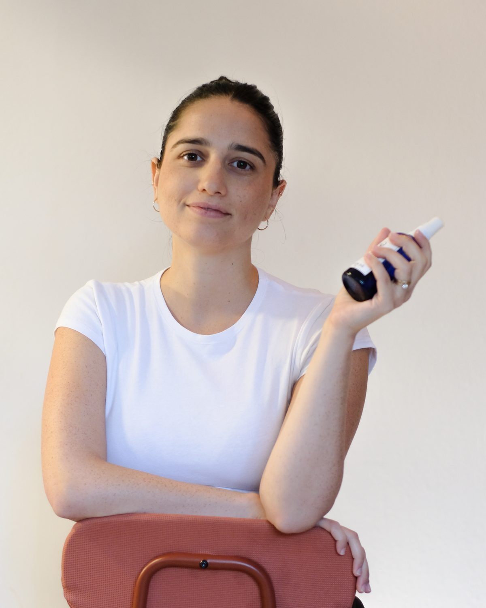

נטורופתיה
ליווי לאורך זמן, שמתחיל בהבנה של מה הגוף מבקש. תזונה, צמחי מרפא ושינוי הרגלים — בקצב שלך, ולא לפי תפריט שכובל אותך.
לפני שנפגשות, אנחנו מדברות — כדי להבין מה הביא אותך ומה מתאים לך עכשיו.
כל הטיפולים מיועדים לנשים ומתבצעים בקליניקות בתל אביב ובעמק האלה, וגם בזום.

ליווי לאורך זמן, שמתחיל בהבנה של מה הגוף מבקש. תזונה, צמחי מרפא ושינוי הרגלים — בקצב שלך, ולא לפי תפריט שכובל אותך.
טיפול מדויק בכפות הרגליים, המחוברות לכל הגוף. מתאים כשמשהו במערכת יצא מאיזון — עיכול, שינה, מתח — ורוצה לחזור למקומו.
התאמת שמנים אתריים לטיפול — במריחה ובהרחה — לפי מה שהגוף והנפש צריכים עכשיו. בסוף המפגש התערובת שלך ממשיכה איתך הביתה.
עיסוי עדין, לא עמוק, עם שמנים טהורים שמותאמים לך. המטרה היא להזרים דם ואנרגיה בגוף, ולתת לשמנים להיספג ולעשות את שלהם.
טיפול אנרגטי במגע, לאיזון פנימי ושקט עמוק. הגוף נח, והמערכת מקבלת רשות להרפות.
שיחה, ומתוכה התאמת תמצית פרחים אישית — תמיכה רגשית עדינה לתקופות של שינוי, לחץ או חוסר ודאות.
שיחה, תערובת שמנים אישית, רייקי ורפלקסולוגיה עדינה — במפגש אחד שלם. לעמוד הטיפול ←
״אני מרגישה טוב עם הדגשים התזונתיים שנתת לי. זה לא כבל אותי בתפריט משעמם. ירדה לי תדירות גלי החום, אני משתמשת בטיפות ונושמת וזה נותן תחושה ממש טובה.״
גלי · הגיעה לטיפול נטורופתי״אחרי חודשיים של ליווי ארומתרפי עם יובל, לא חשבתי אף פעם על טיפול מהסוג הזה והופתעתי לגלות כמה מועיל הוא היה ואיזה שינוי הוא עשה לי פיזית ופנימית גם בגוף וגם בחשיבה. הרגשתי שכל מוצר רקחת בהמון מחשבה, השקעה ואהבה. היה לך חשוב לדייק איתי את הטיפול ולהתאים לי את מה שאני מתחברת אליו וגם זה באמת עבד אחרי לא הרבה זמן! הרגשתי יותר יציבה, מאוזנת ורגועה. תודה!״
שרון · הגיעה לטיפול ארומתרפי״יובל הגיעה לחיי בטיימינג מושלם בזמן שהייתי בין בדיקות רפואיות וקבלת תרופות. הרגשתי בתוכי שאולי צריך להתייחס גם לעולם שבפנים. הצלחתי להכניס הרבה יותר רוגע וטוב לשגרה ואני משתדלת לתת מקום לאופציה הטבעית שעושה פלאים. היחס הכי אישי ואכפתי תודה!״
שקד · הגיעה לטיפול נטורופתי״ישנתי לילה רצוף פעם ראשונה אחרי הרבה מאוד זמן בזכות הטיפות שקיבלתי ממך. מודה לך״
רונה · הגיעה לטיפול בפרחי באך״לא יודעת איך להודות לך, בחיי את לא מבינה מה זה עשה לי היום, אני בן אדם אחר, איזה עוצמות מטורפות!״
עדן · הגיעה לטיפול רייקי״היי יובל. רציתי להגיד לך שחל שיפור ממש מאז הטיפול ביום ראשון. העצירות עברה לי, מרגישה טוב יותר ומשוחררת יותר, ממש מאותו היום הכל התאזן!״
אלה · הגיעה לטיפול רפלקסולוגי״בשבוע אחד ראיתי שינוי מטורף באקנה שלי. הפנים נקיות והמוצרים מדהימים! בימים האחרונים פשוט לא יוצאים פצעים חדשים. אפילו בווסת לא יצא פצע אחד, זה בחיים לא קרה.״
לי · הגיעה לטיפול ארומתרפי״אני חייבת לשתף אותך שאני מתמידה לקחת את פרחי הבאך כל יום 3 פעמים. מרגישה נינוחה ורגועה יותר, באנרגיות טובות יותר! אני בעבודה בלחץ פי מליון ועדיין מצליחה לשמור על רוגע יחסית אז תודה לך״
נועה · הגיעה לטיפול בפרחי באך״זה עבד כמו קסם! חודשים ניסיתי להיפטר מהקשקשים ואף שמפו לא עזר עד שקיבלתי את בקבוקון הקסם שלך. תוך שלושה שבועות הכל עבר. וגם השיער יותר נעים כל פעם אחרי שאני משתמש בשמן. תודה!״
אלון · הגיע לטיפול ארומתרפי״רציתי להגיד לך שהמחזור שלי כל כך שונה ופחות נוראי מאז שיש לי את השמן שלך! אני בדרך כלל סובלת מאוד וזה כל כך עזר לי הפעם״
נעם · הגיעה לטיפול ארומתרפי״רציתי להגיד לך שתוך יומיים הידיים שלי השתפרו בטירוף! כל הנפיחות ירדה, האדמומיות נעלמה והיובש ממש משתפר. מזל שניסיתי קודם את קרם הידיים שלך ולא ישר שמתי את הקורטיזון.״
מאי · הגיעה לטיפול ארומתרפי״חייבת לעדכן אותך שהשתמשתי בלילות האחרונים בשמן שקיבלנו במתנה בסדנה שלך וההשפעה שלו ממש ניכרת. אני כבר תקופה ארוכה סובלת מחריקות שיניים בלילה ובימים האחרונים זה נעלם. מודה שהייתי סקפטית לגבי זה וממש שמחתי לגלות שטעיתי ושזה עוזר! תודה!״
נעמה · הגיעה לסדנת ארומתרפיה״אני מרגישה נורא לחוצה בגלל המבחן הבא ואחרי המקלחת שמתי את שמן הגוף והדלקתי מבער עם השמנים שרקחת לי. זה ממש משפר לי את ההרגשה״
שי · הגיעה לטיפול ארומתרפילא צריך לבחור לבד. אנחנו מתחילות בשיחה קצרה, ומשם אני מציעה מה מתאים — לפעמים טיפול אחד, לפעמים שילוב.
לא. הטיפולים שלי משלימים — הם לא מחליפים אבחון וטיפול רפואי, אלא תומכים בגוף ובנפש לצד הדרך שבחרת.
בקליניקה בתל אביב ובעמק האלה, וגם בזום.
מוכנה לעשות צעד בשבילך? אם הגעת עד לכאן, כנראה שמשהו בפנים קורא לך לעשות שינוי. אני מזמינה אותך לשיחה אישית, פשוט לשלוח לי הודעה בוואטסאפ. זה המקום לשאול, לשתף, ובלי שום התחייבות.
אני רוצה לשלוח הודעה ליובל